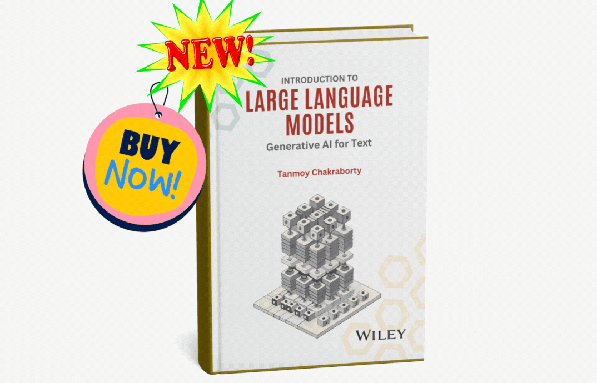
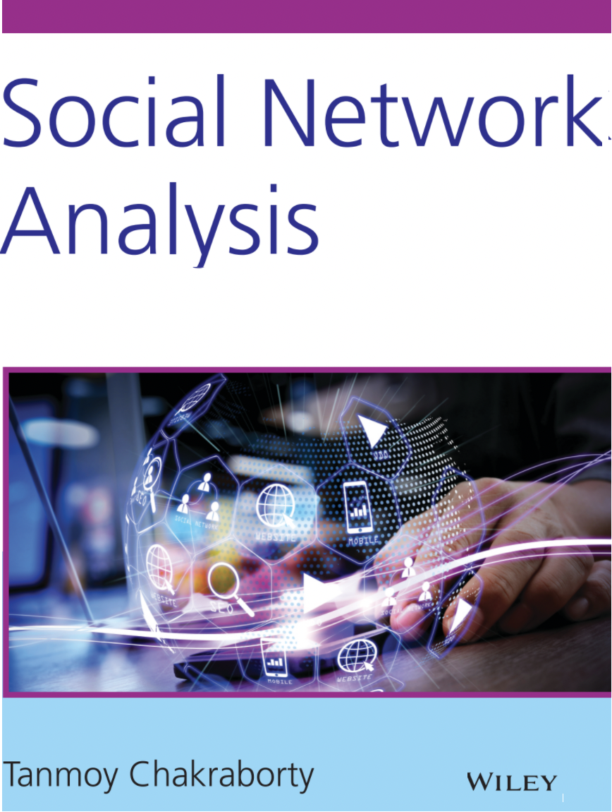
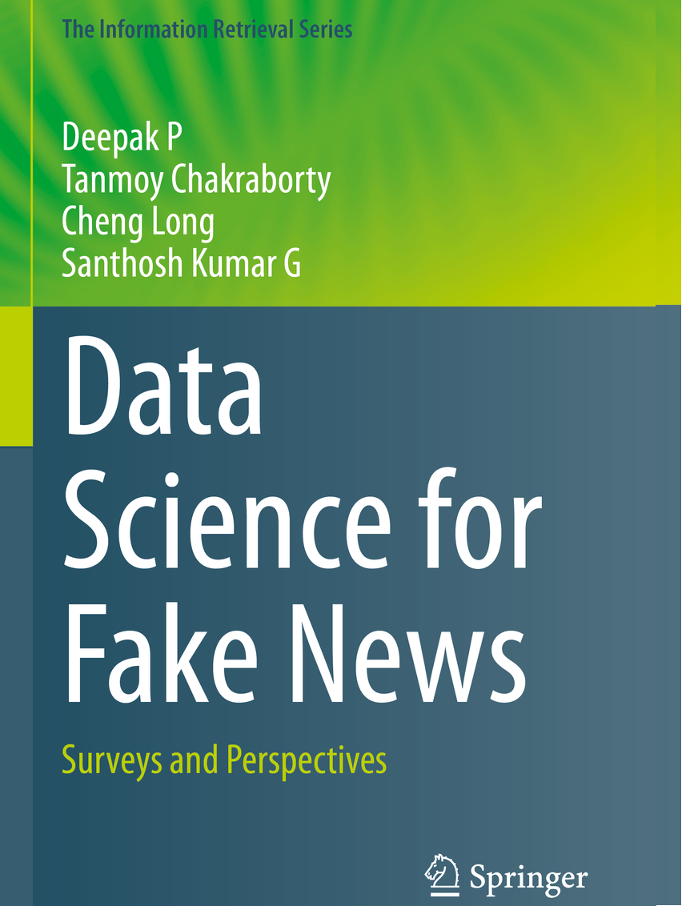
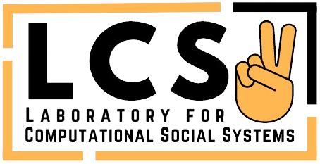

About
Awards
Publications
Students
Activities
Talks
Teaching
Media
Contact




Workshop/Shared Task Organizer
- Co-organizer of the Workshop on Multimodal Models for Low-Resource Contexts and Social Impact (MMLoSo 2025), collocated with IJCNLP-AACL 2025, 23rd Dec 2025, Mumbai, India.
- Co-organizer of the SemEval 2025 - Task 10: Multilingual Characterization and Extraction of Narratives from Online News .
- Co-organizer of the CLEF 2024 - CheckThat! Lab: Checkworthiness, Subjectivity, Persuasion, Roles, Authorities and Adversarial Robustness .
- Co-organizer of the SemEval 2024 Task: Emotion Discovery and Reasoning its Flip in Conversation (EDiReF).
- Co-organizer of the FIRE 2023 Task: Identification of Tokens Contributing to Explicit Hate in Text by Hate Span Detection (HateNorm).
- Co-organizer of the FIRE 2023 Task: Uncovering Truth in Social Media through Claim Detection and Identification of Claim Spans (CLAIMSCAN).
- Co-organizer of the Artificial Intelligence Summer School (AISS), IIIT Delhi, Aug 2022.
- Co-organizer of the Second Workshop on Combating Online Hostile Posts in Regional Languages during Emergency Situation (CONSTRAINT), ACL 2022.
- Co-organizer of the First Workshop on Multimodal Fact-Checking and Hate Speech Detection (De-Factify), AAAI, 2022.
- Co-organizer of the First Workshop on Combating Online Hostile Posts in Regional Languages during Emergency Situation (CONSTRAINT), AAAI 2021, Feb 2 - Feb 9, 2021.
- Organizer of 3rd Workshop on AI for Computational Social Systems (ACSS), 2021.
- Organizer of the Faculty Development Program on "Data Science for Web and Social Media", Feb 29 - Mar 3, 2020.
- Organizer of Workshop on Combating Fraud Activities using Data Science (CoFad)
- Organizer of 2nd Workshop on AI for Computational Social Systems (ACSS), 2020.
- Co-organizer of Workshop on Data Science for Fake News, PAKDD, 2020.
- Co-organizer of SemEval 2020, Task: SentiMix - Sentiment Analysis for Code-Mixed Social Media Text.
- Co-organizer of SemEval 2020, " Task: Memotion Analysis - Emotions of Memes.
- Summer School on AI Assisted Data Analytics, IIIT-Delhi, 11-14 July, 2019.
- Workshop on eHealth in the Big Data and Deep Learning Era, 20th International Conference on Image Analysis and Processing, Trento, 9-13 September, 2019.
- Workshop on AI for Computational Social Systems (ACSS), IIIT Delhi, Feb 2, 2019
- Winter school on AI, IIIT Delhi, India, Jan 18-20, 2019
- Workshop on Exploitation of Social Media for Disaster Relief and Preparedness (SMERP-2) with WWW 2018
- Workshop on Exploitation of Social Media for Disaster Relief and Preparedness (SMERP) with ECIR 2017
- Workshop on Graph-based Methods for Natural Language Processing (TextGraphs-10) with NAACL 2016
Editor in Journal
- Associate Editor of Transactions of the Association for Computational Linguistics (TACL) (July 2025 - present)
- Associate Editor of Computational Linguistics (CL) (Dec 2024 - present)
- Associate Editor of Social Network Analysis and Mining (SNAM) (April 2023 - Oct 2025)
- Associate Editor of ACM Transactions on Asian and Low-Resource Language Information Processing (TALLIP) (Aug 2022 - present)
- Associate Editor of Neural Networks (NN) (Jan 2025 - May 2025)
- Associate Editor of Information Systems Research (2022) -- Special issue on "Unleashing the Power of Information Technology for Strategic Management of Disasters"
- Guest editor of Online Social Networks and Media (2022) -- Special issue on "Multimedia Social Networks Analytics"
- Neurocomputing - Special issue on "Learning to Combating Online Hostile Posts in Regional Languages during Emergency Situation"
- Information Systems Frontiers -- Associate Editor (Jan 2020 -- present)
- Expert Systems (Wiley Online Library) -- Special Issue on "Mining Knowledge from Scientific Data"
- Information Systems Frontiers -- Special Issue on “Exploitation of Social Media for Emergency Relief and Preparedness”
Program/Organizing Committee Members in Conferences
- ACL Rolling review (Action Editor)
- 2026: PC Co-chair (Web4Good Track, The Web Conference), AAAI (SPC), WSDM (SPC), ICLR (AC)
- 2025: EMNLP (PC Co-chair), AACL (Local Co-chair), ACL (AC), SIGKDD (AC), AAAI (SPC), ICLR (AC), IJCAI (SPC), PAKDD (SPC), ACM SAC (Track Chair)
- 2024: WSDM (SPC), ASONAM (PC Co-chair), EMNLP (SAC), NAACL (Best paper award committee), AAAI (SPC), SIGKDD (AC), PAKDD (SPC), LREC-COLING (AC), NeurIPS, ICLR, ICML, EACL (AC), ACL (AC), PST (Track Chair)
- 2023: IJCAI (SPC), EACL (AC), The WebConf (SPC), WSDM (Meta-reviewer/SPC), AAAI (SPC) PAKDD (SPC), ASONAM (Tutorial Co-chair), ACL, EMNLP, NeurIPS, AACL, FIRE, ICON (Publicity Chair), ACM India ARCS (Area Chair)
- 2022: ICON (Program Chair), EMNLP (AC), Coling (AC), CoNLL (AC), NeurIPS, The WebConf (SPC), AAAI (SPC), SemEval (Steering committee), PAKDD (Tutorial co-chair), SIGKDD, ACL (SPC), AACL-IJCNLP (AC), SIGIR, IJCAI, FIRE, DASFAA, ICWSM (SPC), ASONAM, The First Workshop on Graph Learning (SIGKDD)
- 2021: ASONAM (Tutorial co-chair+PC), NAACL (Publication Co-chair + AC), PAKDD (Proceedings Chair, PC), IJCAI (SPC), CoNLL (AC), ACL, SIGKDD, TheWebConf, WSDM, CIKM, EACL, JCDL, AAAI, SIGIR, W-NUT@EMNLP, ICON
- 2020: AACL-IJCNLP, EMNLP, SIGKDD, SIGIR, ACL, JCDL, ASONAM, TextGraphs (COLING), PAKDD, AAAI, TheWebConf, WSDM, WI-IAT, ICON
- 2019: SIGKDD, PAKDD, AAAI, WSDM, ASONAM, NAACL, CIKM, EMNLP-IJCNLP, TextGraphs (EMNLP-IJCNLP), Complex Networks, ECML-PKDD, WI, ADMA (Tutorial Chair), ICWS, DOOCN, CODS-COMAD, ICON
- 2018: AAAI, WWW, PAKDD, NAACL-HLT, ICMLA, Social Networking Workshop (COMSNETS), ICIIT, ODD v.5 (SIGKDD), Complex Networks, ASONAM, TextGraphs (NAACL), WOSP (LREC), ParLearning, CoDS-COMAD,
- 2017: PAKDD, TextGraph (ACL), ASONAM, WOSP (JCDL), SWM (WSDM) ICITAM, Social Networking Workshop (COMSNETS)
- 2016: AAAI, IJCAI, NetSciCom (INFOCOM)
- 2015: WWW, MIKE, ICCIM, IPIC
Other Responsibilities
- Membership Chair: ASIST SIG-Social Media (Oct 2020 - Sep 2021)
- Steering Committee Member: Indiarxiv
- Member: AAAI, ACL, ACM (Senior Member), IEEE (Senior Member)
Email:
tanchak@iitd.ac.in
tanchak@ee.iitd.ac.in
chak.tanmoy.iit@gmail.com*
Phone: 011-26591076
Address:
Room: 3B-7 (Block III 3rd Floor),
Dept. of Electrical Engineering
Indian Institute of Technology, Delhi
Hauz Khas, New Delhi, Delhi 110016, India